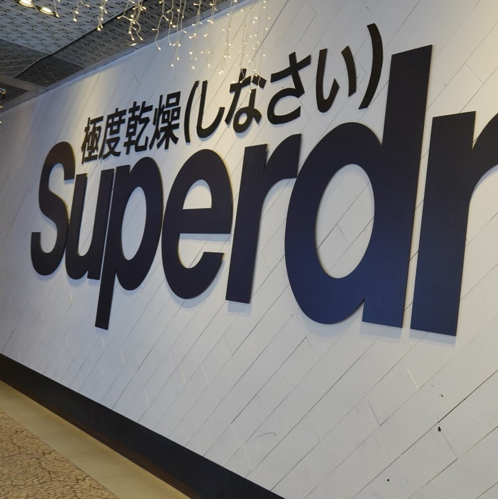
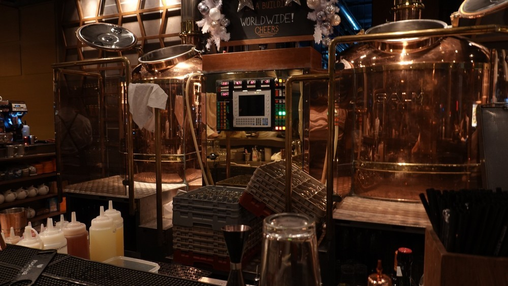

シンガポールの壁
本記事は「壁 Advent Calendar 2019」11日目のなにかです。 今年は人工知能に蹂躙されることもなく、非常に健全なカレンダーとなっていて素晴らしいと思います。
でも多分 @azaazarashi が荒らします。
シンガポール
ところで、シンガポール旅行にいきました。
これは泊まったホテルの壁です。白かった。
これは訪れたビアバーの壁にあったおじさんの絵です。こころなしかアドベントカレンダーの今後を憂いているように見えます。

シンガポールの壁では極度乾燥が発見できました。
クラフトビアバー
クラフトビールといえば、本アドベントカレンダーでもけいひぐ氏らが立ち上げた醸燻酒類研究所の話題で盛り上がっていますね。 まだ知らない方は Twitter アカウントや HP をチェックしておきましょう。
どうやらシンガポールでもクラフトビールブームがきているらしく、 調べてみるとそれなりのマイクロブルワリー・ビアバーが見つかりました。 以下は旅行中に訪れたビアバーの紹介です。
LeVeL 33
一つ目は LeVeL33。 世界一高いとこにあるブルワリーとして有名だそうです。 名前の通りビルの３３階にブルワリーと直営ビアバーを構えており、 やけにいい眺めを楽しめます。

ビール作ってる。
その場で飲めます。新鮮！
テイスティングセット。
パリピに人気なホテルも一望できる。
ビールの味は、まだそこまでクオリティが高いものではないように感じました。 全体的に風味が弱く IPA ですら味が薄く感じるほど。 一番人気は Brut beer のようですが、売り切れていたので、 それはまあまあイケるのかもしれない。
Alchemist Beer Lab
名前が格好いい。HPも格好いい。 Little Island Brewing Co. という名前のブルワリーの直営するビアバーらしく、 そこのビールを多く取り扱っています。
タップが多め。

グラスもこだわりのシュピゲラウっぽいやつ。
このブルワリーのビール、普通にむっちゃ美味しかった。 日本でも買えるのかな？
さいごに
マーライオン、そんなにがっかりじゃないですよ。